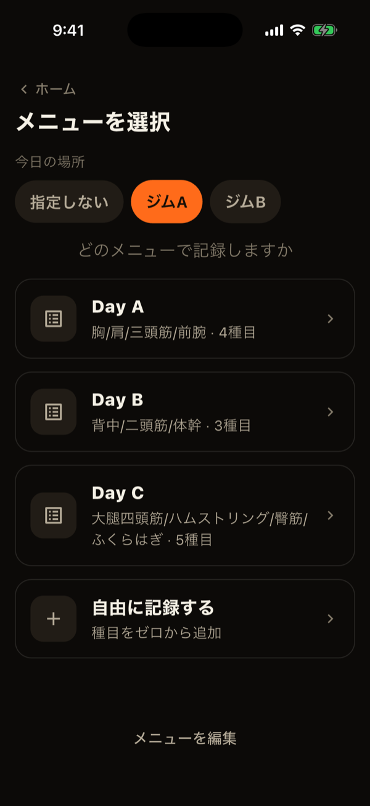
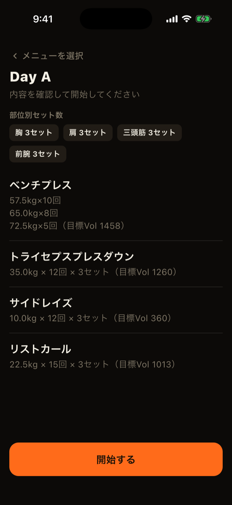
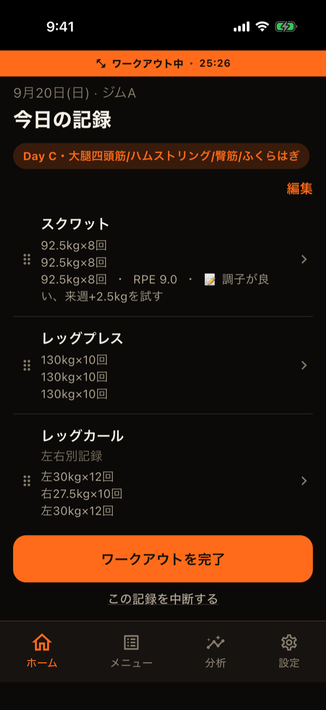
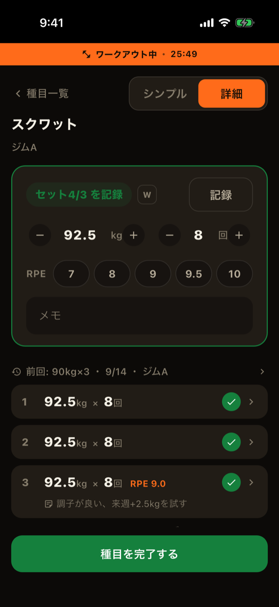
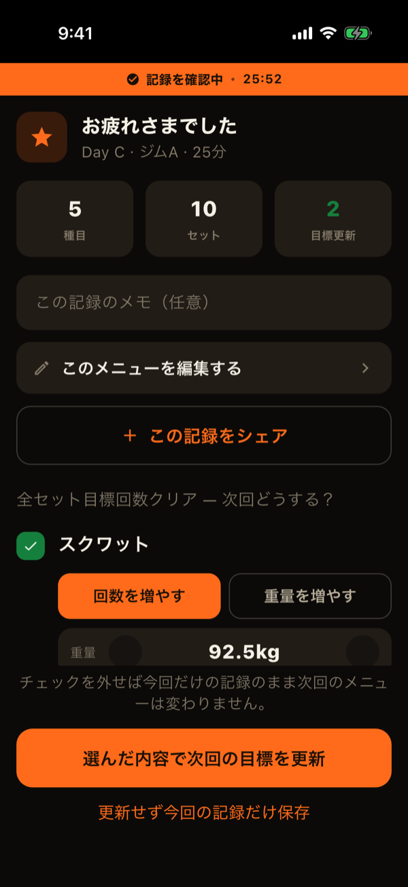

LiFTYでは、ワークアウトを開始してから完了するまでの1回のトレーニングを「セッション」と呼びます。ここでは、セッションの開始からセット記録、完了までの流れを順に説明します。
1. ワークアウトを開始する
ホームの「＋ ワークアウトを開始」をタップします。1日に複数回トレーニングする場合も、「1回目」「2回目」と区別されて記録されます。
- 今日の場所を選ぶ：自宅・ジムAなど、今日トレーニングする場所を選びます。この場所がセッション全体のデフォルトになります。
- メニューを選ぶ：登録済みのメニュー（Day A・Day Bなど）から選ぶか、「自由に記録する」を選びます。選んだ場所で使わない種目だけのメニューは、候補に表示されません。
- 内容を確認して開始：メニューを選ぶと、種目と目標の一覧が表示されます。「開始する」を押した時点で経過時間のカウントが始まります。
「自由に記録する」は、メニューを決めずにその場で種目を選んで記録する方法です。完了時に、その内容を新しいメニューとして保存することもできます。


2. 種目ごとにセットを記録する
ワークアウト中の画面には、実施する種目の一覧が表示されます。種目の行をタップすると、その種目のセット記録画面が開きます。
- 重量・回数を入力して「記録」：入力欄にはメニューの目標値が最初から入っています。目標どおりならそのまま保存し、違っていれば数値を直してから保存します。専用のテンキーが画面下に表示されます。
- 目標のセット行をタップして記録：未記録のセットは、目標値つきで一覧に並びます。先頭の行をタップすると、目標どおりの内容がすぐに1セット分記録されます。
- 目標にないセットも追加できます：「＋ セットを追加」から、目標より多くのセットを記録できます。
- 修正・削除：記録済みのセットをタップすると、重量・回数などを修正したり削除したりできます。
左右を分けて記録する種目
種目の設定で「左右を分けて記録」をオンにしていると、入力カードに「左右」の切り替えが表示され、左右それぞれのセットを記録できます。目標セット数も左右それぞれで数えられ、両側が目標に達して初めて達成となります。
RPE・メモ・ウォームアップ
- RPE：セットのきつさを7〜10で記録できます（詳細モード）。
- メモ：セットごとに自由記述のメモを残せます。
- アップ（ウォームアップ）：「W」ボタンをオンにしたセットは、ウォームアップとして扱われます。目標の達成判定・目標の自動更新提案・セット数の集計には含まれません。
目標セット数に達すると、入力カードが緑色に変わり、画面下の「種目を完了する」が主役のボタンになります。


3. ワークアウトを完了する
すべての種目を記録し終えたら、ワークアウト中の画面の「ワークアウトを完了」をタップします。全種目の目標を達成していると、このボタンが緑色になります。
続いて表示される記録完了画面では、次の操作ができます。
- セッション全体のメモ：その日のトレーニング全体について、任意でメモを残せます。
- 目標の自動更新提案：全セットで目標を達成した種目があれば、次回の目標を上げる提案が表示されます。「回数を増やす」か「重量を増やす」かを選んで、目標を更新できます。提案は設定でオフにもできます。
- メニューとして保存（自由記録のみ）：実施した内容を、新しいメニューとして保存できます。
最後に「記録を保存する」（提案がある場合は「更新せず今回の記録だけ保存」など）をタップすると、セッションが完了します。

途中でやめたい時・今日は休みたい時
- 記録を中断する：ワークアウト中の画面の下にある「この記録を中断する」から、そのセッションを破棄できます。
- 休息日を宣言する：ホームの「今日は休む」から、意図して休んだ日として記録できます。記録カレンダーでは、トレーニングした日とは別の色で表示されます。
過去の日の記録を追加する
記録し忘れた日は、あとから追加できます。ホームの継続カード（日付が横に並んだカレンダー）で対象の日を選び、下の「＋ この日の記録を追加」をタップします。場所とメニューの選び方は、今日の記録と同じです。
LiFTYは、アカウント作成なしですぐに記録を始められる筋トレ記録アプリです。
App Storeでダウンロード